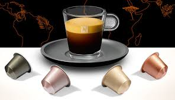

Nespresso
Nespresso es la otra marca comercial de cafés en cápsulas de la compañía Nestlé. Esta es otra de las variedades de Nestlé para cafés en cápsulas, Nespresso.
Quizás te estés preguntando, ¿por qué Nestlé querría tener dos marcas de café por cápsula? La respuesta es sencilla, van a públicos muy distintos. Mientras Dolce Gusto está más orientada a un público menos exigente, y que valora más un precio asequible a un sabor exquisito, Nespresso es la marca que está orientada a las personas que disfrutan apreciando el sabor de un buen café de alta calidad.
Las máquinas Nespresso hacen un café más próximo al sabor de una máquina espresso de barista, la consecuencia de ello, es que son más caras, pero vale la pena si te gusta el buen café.
Además, cuentan con una mayor variedad de cafés, entre los que se encuentran:
- Ristretto
- 100% arábigo
- Expreso
- Lungo expreso
- Café etíope expreso